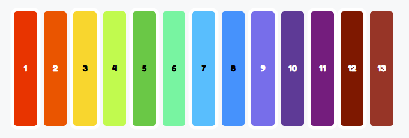
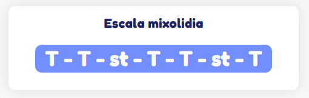
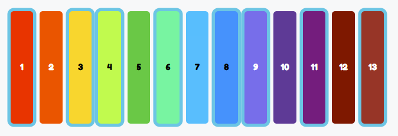
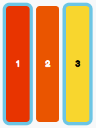
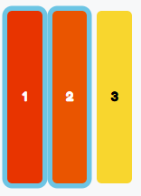

¡Aventurero! Estamos explorando la Jungla Musical, y solo tus habilidades musicales pueden ayudarnos a cruzar el Puentono. ¿Estás listo para el desafío?
El Puentono es un puente mágico formado por tablas coloridas, cada tabla representa una nota musical distinta. Cuando pisas una tabla, esta genera el sonido de su nota y comienza a brillar. ¡Es como caminar sobre música!
Para cruzar el Puentono, deberás tocar la escala musical que aparece en el Escaletrero, un letrero especial que muestra la secuencia de notas que debes seguir y el nombre de la escala a la que pertenece.
Pero no te preocupes en la siguiente pagina se te brindarán todos los conocimientos que necesitarás de teoría musical para lograr tu objetivo.
Una escala musical es un patrón de notas que, juntas, transmiten emociones y sensaciones. Las escalas están compuestas por tonos y semitonos, que puedes pensar como saltos grandes o pequeños en el puente.
Un Tono, representado por la letra T, es un salto grande que implica saltar dos tablas del Puentablero.
Un Semitono, representado por las letras st, es un salto pequeño que solo avanza una tabla.
Recuerda, para dar saltos en el Puentono solo sigue las indicaciones del Escablero, haz click en el tono o semitono de la nota que este te indique.